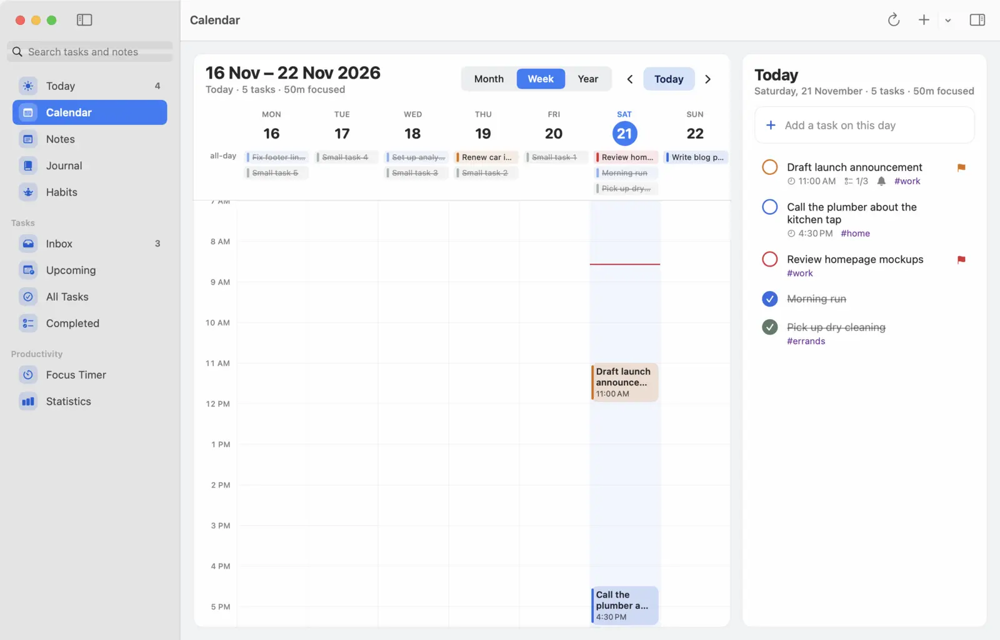
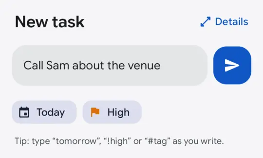
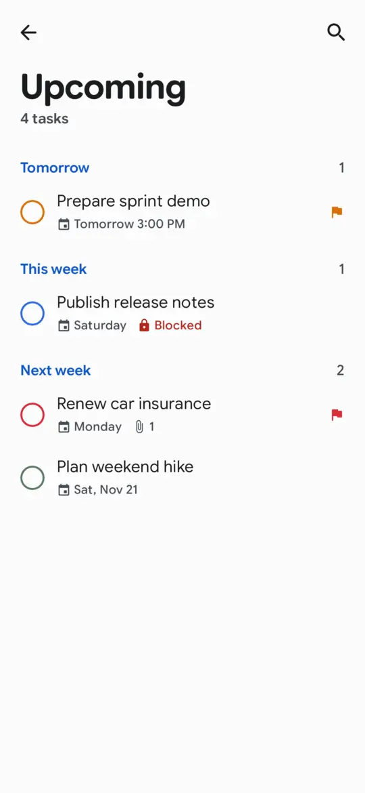
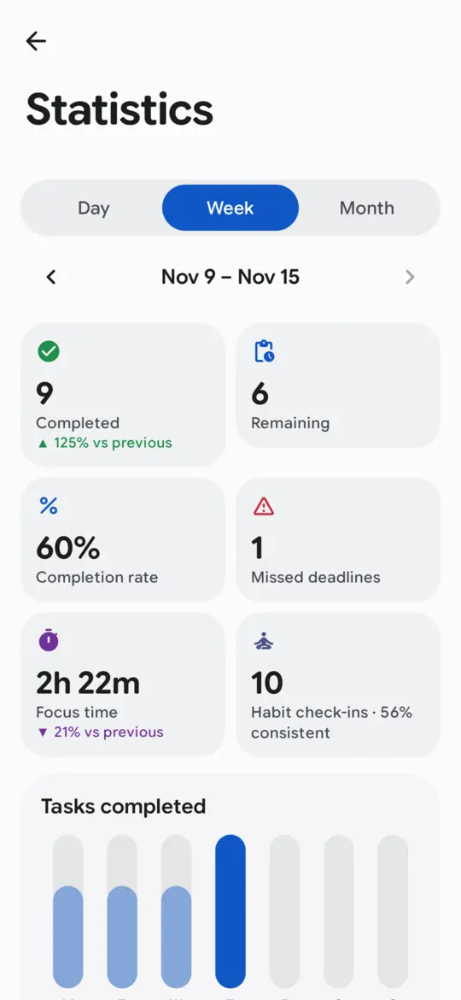
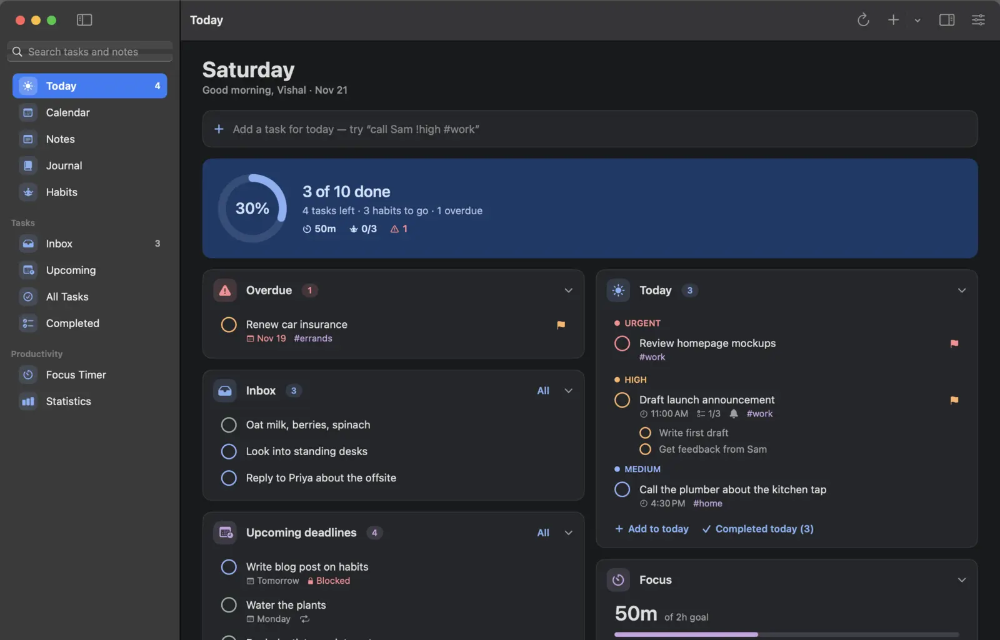

Dayline is your whole day in one calm place: tasks, calendar, habits, focus and notes, on your Android phone and your Mac. No account, no ads, no tracking, and your own Google Drive keeping both in step.
Version 1.2.0 · 4.7 MB · Free · Android 8.0 or newer · First time installing?
Dayline for Mac. The same day, on your desk.New
Monday
Good morning
Try “tomorrow”, “friday”, “!high” or “#tag” as you type.
Habits
0 of 3 done today
Focus
One thing at a time
Review the landing page copy
It works: tick a task, type a new one, check off a habit, start a focus session.
Dayline for Mac. The same tasks, habits, notes and journal, on calm Mac surfaces. A Today dashboard, a calendar laid out by the hour, notes in three panes that fold away with two fingers, widgets, and your day in the menu bar.
NewVersion 1.3.7 · 3.3 MB · macOS 14 or newer, Apple silicon
In step with your phone. Connect the same Google account on both, and changes arrive in seconds. Edits from both sides are merged item by item, so nothing is lost.
Keyboard first. ⌘N a task, ⌥⌘N a note, ⇧⌘J a journal entry, ⇧⌘F to start focusing. It updates itself.

Plan the day in a tap. Type a task the way you'd say it. Dayline reads the date, priority and tag as you write, puts it on the right day, and reminds you when it matters.



Routines that stick. Habits that forgive the days you didn't plan, counters for the glasses of water, a calendar that shows repeating tasks ahead of time, and a focus timer tied to the task in front of you. Try them in the phone above.



Write it down, look it up. Notes with headings, colours, tables, callouts, checklists and [[links]] between them, nested #tags, a lock for the private ones, and a journal with a new prompt every day.



Light enough to keep. One small app instead of five, nothing to sign up for, and nobody in between you and your day.
4.7 MB to download. One app where most people juggle five.
A to-do list, a calendar, a habit tracker, a focus timer and a notes app, or Dayline.
0 accounts, ads, trackers or servers. Your day lives on your phone and your Mac.
Seconds between phone and Mac. While both are open, through a hidden folder in your own Google Drive.
Open source, MIT licensed. Read every line on GitHub, build it yourself, or send a fix.
- Quick capture. “tomorrow”, “friday”, “!high” and “#tag” understood as you type.
- Dependencies. A task waiting on another can't be ticked until its blocker is done.
- Repeats and reminders. Daily, weekly, monthly or your own. Complete or snooze from the notification.
- Calendar. Month, week and year, with repeating tasks shown ahead of time.
- Habits and counters. Streaks that forgive unscheduled days. 5 of 8 glasses counts.
- Focus timer. Pomodoro sessions and breaks, tied to a task, with a daily goal.
- Statistics. Day, week and month, a heatmap of everything done, and the trend.
- Rich notes. Headings, colours, tables, callouts, code, checklists. Export to Markdown or PDF.
- Journal. A prompt a day, entries by month, bookmarks, your writing streak.
- Widgets. Today, progress, next up, habits, focus and quick add, on both devices.
- Gestures and haptics. Swipe right to complete, left to delete, with undo.
- Locked notes. Behind your fingerprint, face, Touch ID or password.
Questions? Answers.
What is Dayline?
One app for the whole day: tasks, a calendar, habits, a focus timer, notes and a journal, on Android and the Mac. Made by one person, Vishal Chavan, because juggling five apps to plan one day was too many.
Is it free?
Yes. No account, no subscription, no ads, and it's open source under the MIT licence.
Which phones and Macs?
Android 8.0 or newer. On the Mac, macOS 14 Sonoma or newer on Apple silicon (M1 or later).
Why isn't it on Google Play, and how do I install it?
Dayline is published here, on GitHub. Tap Download for Android, open the .apk, and allow installing from your browser when Android asks. If Play Protect says it hasn't seen the app before, tap Scan app, then Install.
On the Mac, open the .zip and drag Dayline into Applications. It isn't notarized by Apple yet, so the first time, open System Settings → Privacy & Security and click Open Anyway.
I'm on 1.1.8 or earlier and 1.2.0 won't install.
Since 1.2.0, Dayline is signed with its own key instead of a developer test key, so it can't install over the old app. Once: open Settings → Google sync and tap Sync now, uninstall Dayline, install 1.2.0, and turn sync on again. Everything comes back.
Does it sync?
Yes, if you want it to. Connect the same Google account in Settings → Google sync on your phone and your Mac. Dayline keeps one file in a hidden app folder in your Google Drive; it can't see anything else there. Changes arrive within seconds while both apps are open, and edits from both sides are merged item by item.
Where does my data go?
Nowhere but your devices, and your own Drive if you turn sync on. Dayline has no servers, no analytics and no tracking. The details are in the privacy policy.
How do updates work?
The Mac app checks for a new version, downloads it and swaps it in. The Android app tells you when a new version is out, and Update opens its page to download it.
Something's wrong.
Dayline is free, for Android 8.0 or newer and Macs with Apple silicon. Five apps' worth of day, one calm place, and nothing in between you and it.